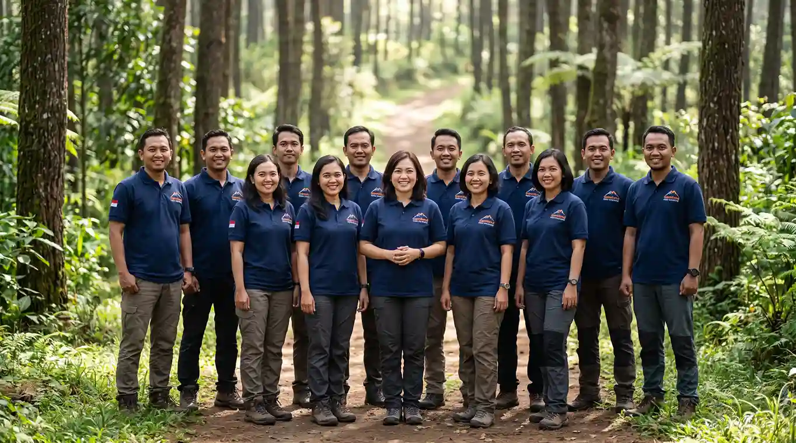
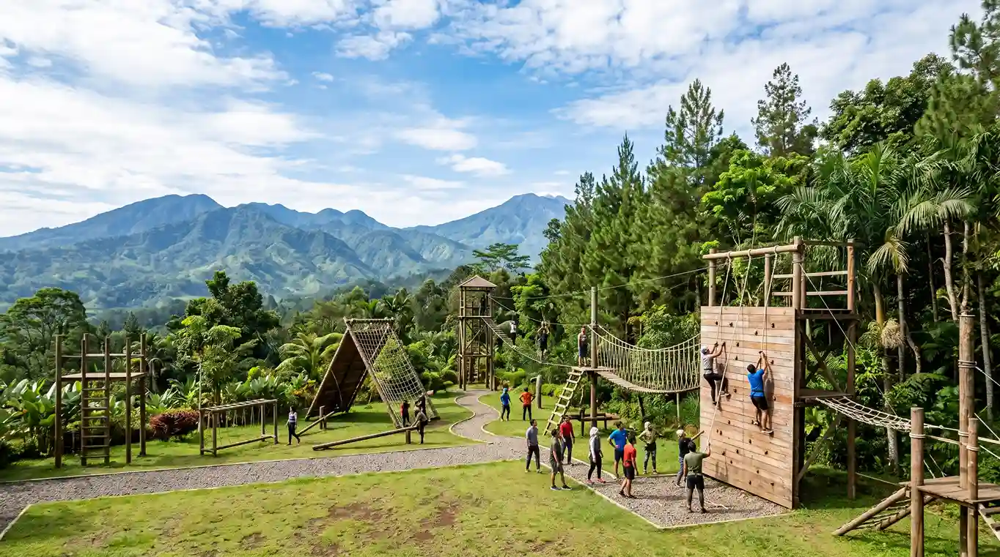

Gemilang Katun Outbound lahir dari pengalaman pendirinya memandu sebuah acara gathering kecil di tahun 2014, dan menyadari betapa besar dampaknya saat sebuah tim benar-benar keluar dari ruang kerja dan menghadapi tantangan bersama di alam terbuka.
Dari situ, kami tumbuh menjadi penyedia jasa outbound dan corporate gathering yang dipercaya puluhan perusahaan, sekolah, dan komunitas di seluruh Indonesia — dengan satu prinsip yang tidak berubah: setiap program harus punya tujuan, bukan sekadar seru-seruan.
Memulai dengan program fun games sederhana untuk 30 peserta di Bogor.
Menambahkan rope course, flying fox, dan paket corporate gathering menginap.
Seluruh fasilitator inti tersertifikasi standar keselamatan kegiatan luar ruang.
Kini hadir di 40+ lokasi mitra di seluruh Indonesia.
Menjadi mitra outbound & team building terpercaya di Indonesia yang membantu setiap tim tumbuh lebih solid, komunikatif, dan siap menghadapi tantangan bersama.
Standar keamanan bukan formalitas — ini fondasi dari setiap aktivitas yang kami rancang.
Program dirancang agar setiap peserta punya peran, bukan cuma jadi penonton.
Kami percaya keluar dari zona nyaman adalah cara tercepat untuk bertumbuh bersama.
Setiap kegiatan menjaga kebersihan lokasi dan meminimalkan dampak ke alam sekitar.

Konsultasikan kebutuhan program outbound atau gathering perusahaan Anda bersama tim kami.